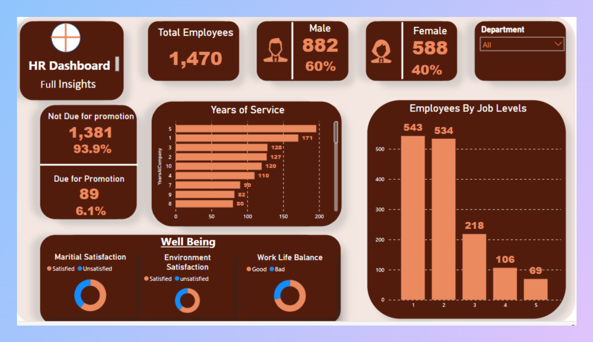
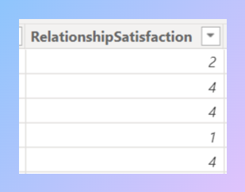
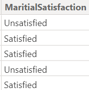
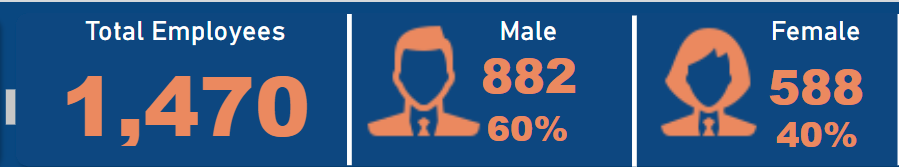
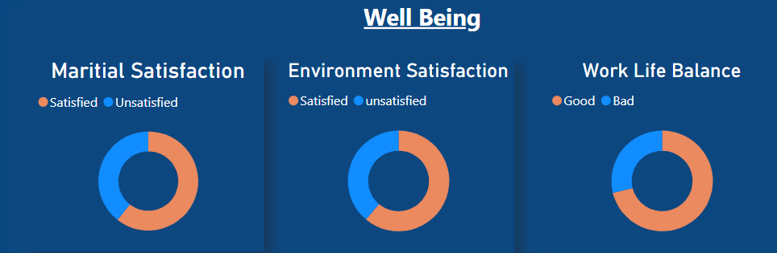
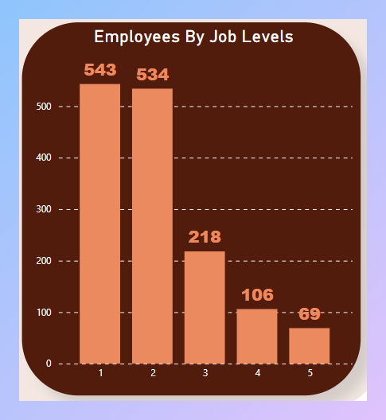
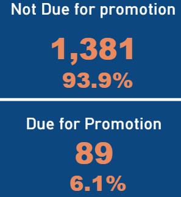

A workforce read on diversity, well-being, and promotion readiness
An HR analytics review built in Power BI, covering gender balance, employee satisfaction, job-level distribution, and who's overdue for promotion.

Introduction
This HR analysis report provides an overview of key factors related to diversity and inclusion, employee well-being, distribution across job levels, and the identification of employees due for promotion within the organization. The assessment primarily focuses on gender distribution as a measure of diversity and inclusion, while considering employee satisfaction in terms of marital status, work environment, and work-life balance.
By examining these aspects, the report provides insights into the current state of the organization and highlights areas that require attention. These findings serve as a foundation for strategies that foster a more inclusive and supportive work environment, enhance employee well-being, and ensure fair opportunities for career growth.
Problem statement
The organization faces challenges related to diversity and inclusion, employee well-being, distribution across job levels, and the identification of employees due for promotion. These issues require attention to ensure an inclusive workforce, enhance employee satisfaction, address potential disparities in career advancement, and establish a streamlined process for recognizing and promoting deserving employees.
Data sourcing
The organization provided a comprehensive dataset in CSV format for this analysis. It includes employee demographics, satisfaction ratings on the work environment, marital status, and work-life balance, along with information on job levels and promotion eligibility. This dataset serves as the foundation for deriving insights and recommendations.
Data transformation
The dataset underwent transformation to improve its usability. One key step converted satisfaction ratings into two categories — "satisfied" or "unsatisfied" (and "good" or "bad") — using additional columns built in Power Query. This enabled a more direct read on employee satisfaction and well-being.


Analysis and visualization
Finding 1
Diversity
Out of 1,470 employees, a gender analysis reveals a significant diversity gap, with a higher representation of males compared to females. Addressing this gap and promoting gender equality will be crucial in fostering a more inclusive and representative work environment.

Finding 2
Employee well-being
Marital satisfaction stood at 60.61% satisfied versus 39.39% dissatisfied. Environmental satisfaction was 61.6% satisfied versus 38.4% dissatisfied. Work-life balance was rated good by 71.16%, with 28.84% reporting a poor balance. These findings point to a need to address marital satisfaction, improve the work environment, and support work-life balance.

Finding 3
Distribution across job levels
Levels 1 and 2 — the lower levels — account for a combined 1,077 employees. Level 3 has 218, while levels 4 and 5 combine for 175. This shows a relatively fair progression across job levels, with headcount gradually decreasing as levels advance.

Finding 4
Promotion eligibility
89 employees who have been with the organization for 9 years or more are eligible for promotion. Recognizing these long-serving employees with clear advancement opportunities is key to fairness and rewarding their commitment — and to retaining them.

Recommendations
Enhancing diversity and inclusion
Address the gender imbalance through targeted recruitment, diversity training, and a work environment that visibly values and celebrates diversity.
Improving employee well-being
Provide resources and support systems for work-life balance, and continuously assess the work environment to sustain satisfaction and engagement.
Recognizing long-serving employees
Formalize a recognition program for long-tenured employees, using skills assessment, mentoring, and personalized development plans.
Continuous data analysis
Regularly monitor HR data to catch emerging trends and disparities early, and use the findings to drive targeted interventions.
See the figures above live, with filters you can apply yourself.
Open the interactive dashboard